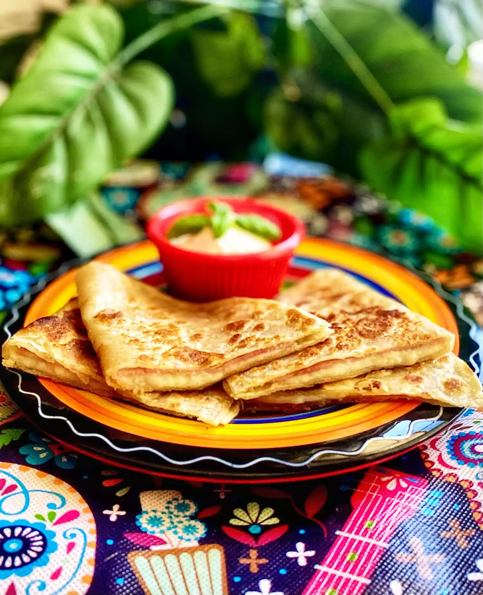

Quesadillas

Description
Sincronizadas are quesadillas made with ham and cheese. They were a common
light meal in the part of Mexico where I stayed this year and make a quick
and easy breakfast or lunch. Serve with your favorite salsa or canned
chile slices.
Ingredients
- 2 (8 inch) flour tortillas
- 1/4 cup shredded Monterey Jack cheese
- 2 slices ham
Steps
-
Warm a griddle or a flat pan over medium heat. Sprinkle 1/2 of the
Monterey Jack cheese over 1 of the tortillas, add ham, and sprinkle the
rest of the cheese over the ham. Top with the second tortilla.
-
Cook sincronizada on the griddle or flat pan until tortillas are lightly
toasted and the cheese has melted, turning with a spatula or tongs to
toast both sides, 2 to 3 minutes per side.
Go Back